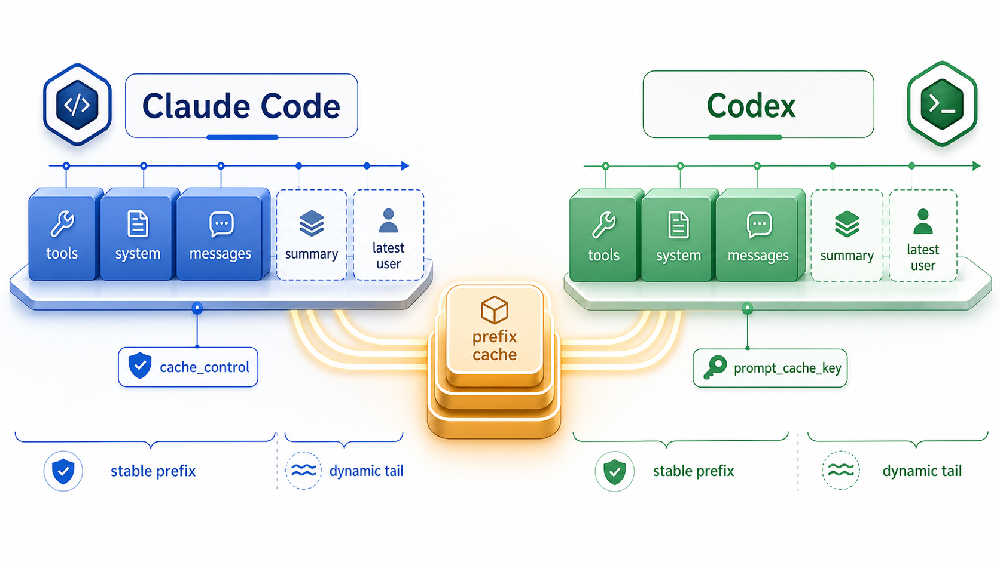
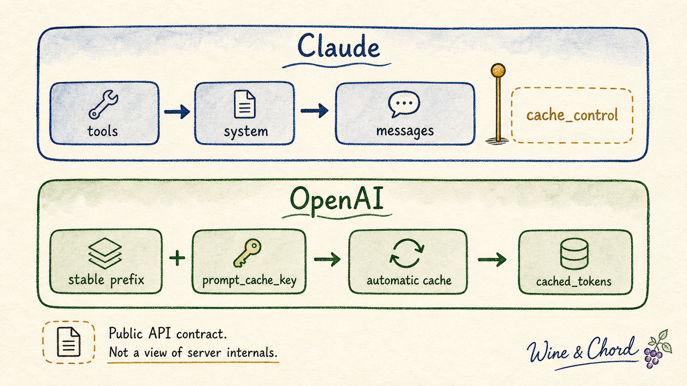
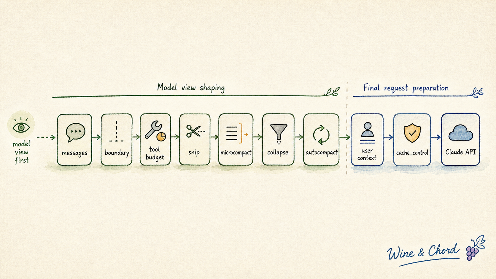
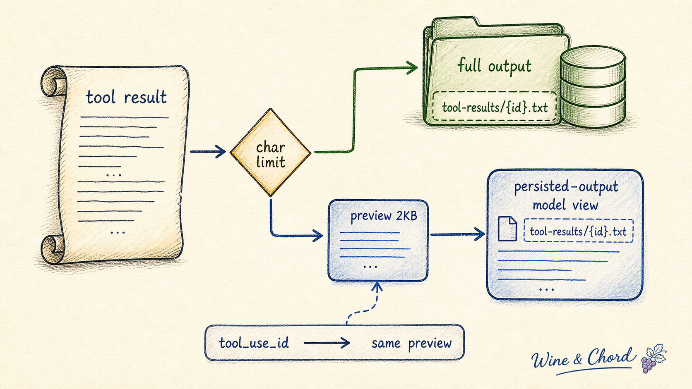
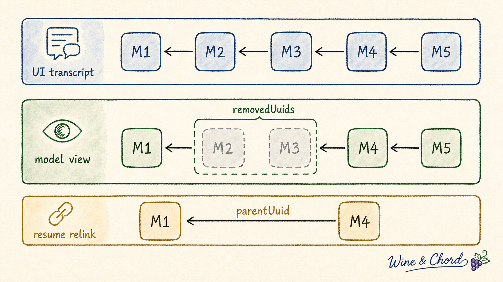
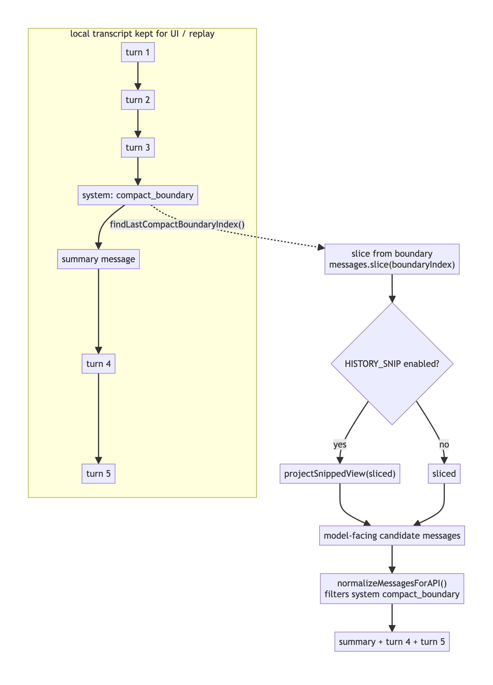
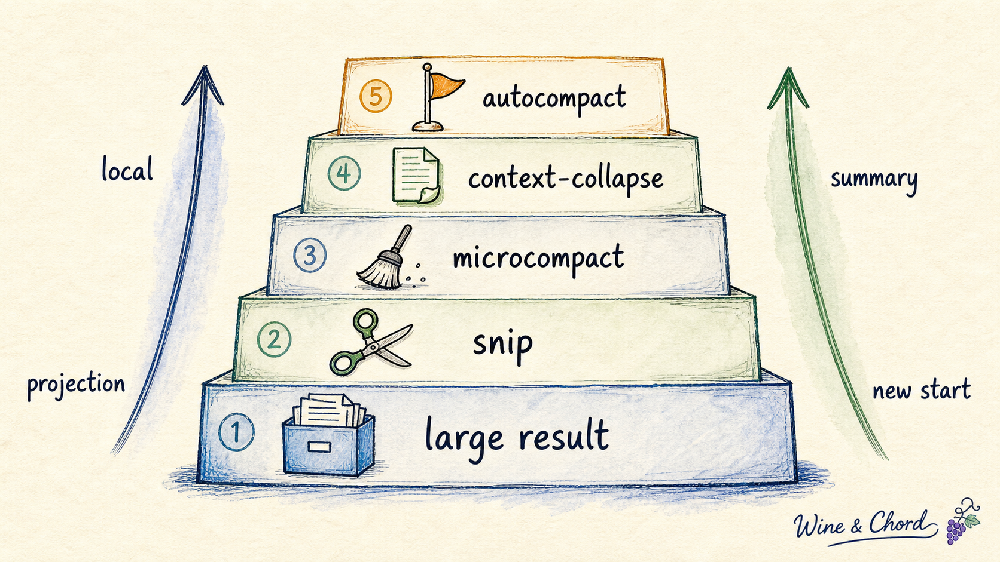
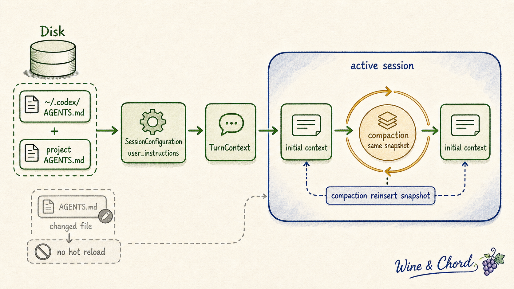
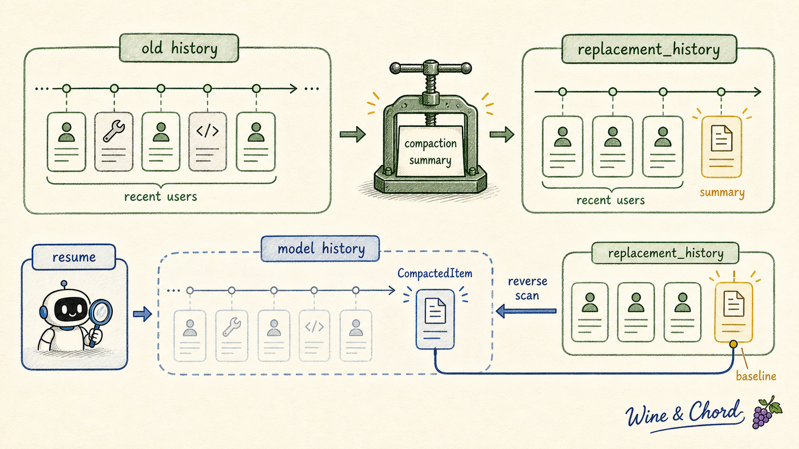
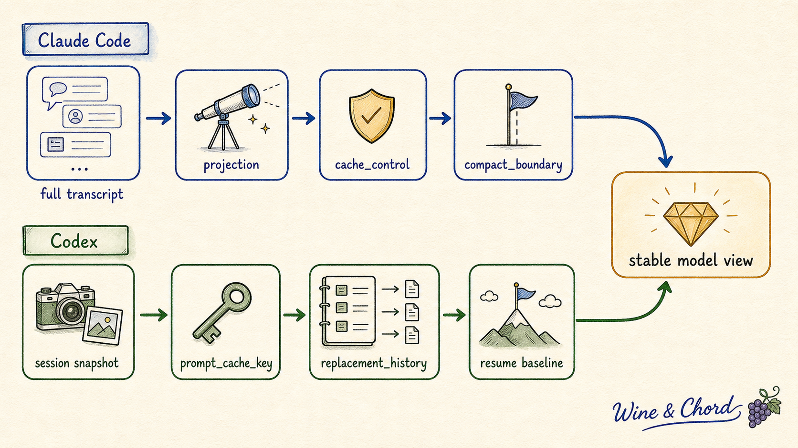

Claude Code 和 Codex 的 Prompt Cache：模型视图如何决定缓存命中

长时间使用 coding agent 时，最先撞上的问题通常不是“模型会不会写代码”，而是上下文怎么活下去。这里的 coding agent 指能读代码库、改文件、运行命令并维护会话历史的编程 runtime；Claude Code 官方更常用 agentic coding tool 这类说法，Codex 官方则直接称自己为 coding agent。
一轮请求里可能有系统规则、工具定义、项目说明、运行环境、历史消息、工具输出、图片、文档、摘要和最新用户输入。前几轮还好，几十轮以后，输入会迅速膨胀。每一轮都把所有内容重新送进模型，成本高，延迟高，也更容易把真正重要的信息挤出窗口。
Prompt cache 解决的是其中一部分问题：如果连续请求共享相同前缀，服务端可以复用已经处理过的前缀计算。它不是语义缓存，不是“这两句话意思差不多就命中”。它更接近字节和结构层面的前缀复用：前面那段 prompt 越稳定，缓存越容易命中。
从推理系统的角度看，这通常对应 prefill 阶段的重复计算复用。开源推理框架 vLLM 的 prefix caching 设计文档把它说得很直接：相同前缀已经处理过时，可以复用对应的 KV cache blocks，而不是重新计算整段 prompt。这也解释了为什么 prompt cache 对“相同前缀”这么敏感：它复用的是已经算过的前缀状态，不是复用模型即将生成的回答。
这类系统的难点在于，prompt 不是一段静态文本。它是 runtime 拼出来的“模型视图”。Claude Code 和 Codex 的源码都在围绕这个视图做工作：哪些内容放前面，哪些内容放尾部，哪些内容落盘，哪些内容摘要，哪些内容只在 UI 里保留，哪些内容真正送进模型。
这篇文章只抓一条主线：prompt cache 不是一个孤立的 API 参数，而是一整套“模型视图纪律”。源码里所有看似分散的设计，最后都在回答四个问题：
- provider 到底允许缓存哪一段前缀？
- runtime 怎么让这段前缀尽量稳定？
- 工具输出和历史膨胀时，是先局部减压，还是直接总结整段对话？
- 压缩之后，下一轮请求怎样知道模型应该从哪里继续看？
把这四个问题串起来，Claude Code 和 Codex 的差异就不再是“一个手动、一个自动”这么粗的描述，而是两套 runtime 在不同 provider contract 下，对同一个长上下文问题给出的两种工程答案。
更进一步说，源码里真正值得看的不是“它用了哪个 API 字段”，而是每个字段背后的取舍：为什么这段内容要稳定，为什么那段内容要靠后，为什么有些东西只留在 UI 或磁盘，为什么不能等到窗口快爆了再统一总结。把这些问题问下去，prompt cache 才会从一个计费功能变成长上下文 runtime 的结构约束。
这篇文章的证据也分三层：provider contract 以 OpenAI、Anthropic 等官方文档为准；源码机制以固定 commit 的公开源码快照为准，其中 Claude Code 相关链接使用 WineChord/claude-code 公开镜像快照；服务端内部序列化、缓存路由和发行版 feature gate 只能按公开契约和可见源码做边界内推断。后面凡是讲“形状”“视图”“契约”，都在这个边界内使用。
读这类源码，最容易迷路的地方不是函数太多，而是每个函数看起来都像“再整理一下上下文”。更稳的读法是把每个机制都追问到底：它在防止哪一种失败？如果用更简单的做法，会坏在缓存、语义、恢复、还是可见历史？一旦沿着这个问题链走，prompt cache 就不再是一个孤立优化，而是 runtime 对模型视图负责的方式。
接下来按这条问题链展开：先建立“模型视图”的坐标系，再看 Claude Code 怎样围绕显式缓存断点维护这条视图，然后看 Codex 怎样在自动 prefix cache 下维护可恢复历史，最后把两套设计压回同一张对照图。
一、心智模型：缓存命中的是模型视图
先不急着进源码。这里要先立一个坐标系：我们讨论的不是“聊天窗口里看到了什么”，也不是“磁盘上保存了什么”，而是本轮 API 请求里模型实际看到了什么。后面的 getUserContext()、compact_boundary、replacement_history、AGENTS.md，全都要放回这个坐标系里理解。
1.1 三种历史：UI、磁盘和模型
理解 prompt cache 之前，要先区分三种“历史”。
第一种是 UI 历史，也就是用户在界面上看到的 scrollback。它应该尽量完整，因为用户需要回看、复制、调试。
第二种是磁盘历史，也就是 session transcript、rollout JSONL、tool result 文件、collapse commit 等持久化记录。它服务于 resume、fork、审计和恢复。
第三种是模型历史，也就是本轮 API 请求里真正进入 provider prompt 的 messages、system / instructions、tools、schema 和附加 context。这里说的是 API contract 和缓存前缀层面的输入，不等于公开了推理服务内部每个 token 的物理排列。
后面反复出现的 API-bound 就是在说第三种历史。它不是“已经写进 transcript 的历史”，而是 runtime 在发 API 前临时构造出来的请求副本：里面可能多了 [id:...] tag、cache_control、cache_reference、cache_edits，也可能已经经过 snip、microcompact、context-collapse 或 autocompact projection。它的边界很重要：UI 和磁盘可以保持完整，但 API-bound view 才决定模型这一轮实际看什么，也决定 provider cache 会按什么前缀匹配。
Prompt cache 命中的永远是第三种：模型看到的有序输入。UI 里还在，不代表模型还会看到；磁盘里还在，也不代表每轮都会进 prompt。
判断一段 context 应该放在哪里，可以先问三个问题：
谁需要它？
模型本轮推理需要，还是只给用户回看，还是只给 resume 恢复？
它会不会变？
稳定规则适合靠前；临时事实、时间、工具输出适合靠后或可替换。
拿掉会坏什么？
会丢语义，就需要 summary 或恢复契约；只会丢可见细节，就可以落盘、裁剪或折叠。
后面所有机制都在反复回答这三个问题。SNIP、microcompact、context-collapse、autocompact 看起来名字很多，本质上只是对这三个问题给出了不同粒度的答案。
1.2 Provider contract：Claude 和 OpenAI 给客户端的控制面不同
可以把一次请求抽象成：
Claude 侧公开层级：
tools -> system -> messages -> cache breakpoint
OpenAI 侧公开契约：
exact initial prefix + prompt_cache_key
prefix 可包含 messages / tools / schemas / images
缓存命中依赖：
前缀尽量长，且尽量不变。

这里必须把 Claude 和 OpenAI 分开理解。两边都叫 prompt caching，但客户端能控制的东西不是同一个。
Claude：客户端可以标记缓存断点
Claude API 文档明确给出 cache prefix 的层级：tools、system、messages。这不是一句抽象建议，而是后面读源码时要抓住的顺序：Claude 的 tool-use 文档也展示了工具定义会进入 tool-use system prompt，并排在用户 system prompt 之前。所以在 Claude 侧，把工具定义视为稳定前缀最前面的组成部分，是有公开依据的。
Claude API 有显式的 cache_control。prompt caching 会引用从 tools 到 system 再到 messages 的完整前缀，一直到被标记的 cache breakpoint。Claude API 也有顶层 automatic caching：请求体上放一个 cache_control，系统会把 breakpoint 自动放到最后一个可缓存 block。缓存默认 5 分钟 TTL，也有 1 小时 TTL；cache read 和 cache write 会在 usage 字段里体现。
这意味着 Claude Code 可以在客户端代码里明确决定 breakpoint 放在哪里。源码里的 addCacheBreakpoints 就是在做这件事。
OpenAI：客户端稳定前缀，服务端自动命中
OpenAI 侧更适合描述成“自动 prefix cache”。公开文档能依赖的是：命中需要 exact prefix match；静态内容应该放前面，动态内容放后面；tools、messages、images、structured output schemas 都可以参与缓存；prompt_cache_key 会参与路由，让共享前缀更容易落到同一缓存域。
OpenAI 文档没有给出一个和 Claude 完全同构的 tools -> system -> messages block hierarchy。Codex 源码也只是在客户端构造 Responses API 请求，把 instructions、input、tools、text 和 prompt_cache_key 交给 provider；服务端内部如何序列化这些字段，不能作为客户端侧可依赖的工程事实。
所以 Codex 不能像 Claude Code 那样“把缓存点插到某一条 message”。它能做的是把重复内容放在稳定前缀里，把变化内容推到尾部，并用 prompt_cache_key 稳定同一类请求的缓存域。通过 usage.prompt_tokens_details.cached_tokens，客户端可以观察命中结果，但不是手动指定某个 content block 作为断点。
这会塑造 runtime 设计
这会直接塑造 runtime 设计：
Claude Code:
显式 cache_control + message projection + compact_boundary
Codex:
prompt_cache_key + automatic prefix cache + replacement_history
两个系统都在追求稳定前缀，但工具不一样。
这就是为什么“规则文件怎么注入”“工具结果怎么处理”“compaction 后有没有边界”都会影响 prompt cache。它们看起来是上下文管理问题，本质上也都是缓存前缀管理问题。
如果忽略 provider contract，最容易得出一个看似统一、实际错误的结论：把所有静态内容塞进最前面，然后让服务端缓存。这个说法对工程实现太粗。Claude Code 可以精细移动 breakpoint；Codex 更依赖自动 prefix cache 和可恢复历史形状。两者都要稳定前缀，但一个是在显式断点附近做手术，另一个是在完整请求形状上保持纪律。
1.3 规则文件：稳定快照比文件焦点更重要
coding agent 通常有项目规则文件：
这些文件不是普通聊天内容。它们描述项目约定、测试命令、代码风格、权限限制和目录语义。如果每轮请求都根据“当前打开文件”重新在前缀里塞一批规则，缓存会很容易失效；如果规则稳定、动态事实靠后，缓存前缀就能活得更久。
Claude Code 和 Codex 的处理方式都不是“打开某个文件就自动重装一整套规则”。它们更接近：
会话或 turn 开始时构造基础 context
稳定内容尽量复用
变化内容用尾部消息、diff 或重新注入机制处理
compaction 后保留可恢复的边界或替换历史
这个模型比“system prompt 一次性全塞满”更准确。
1.4 像看网络包一样看 prompt
很多 prompt cache 的误解，来自把“聊天记录”想成一条连续文本。更接近真实工程的方法，是把每一轮请求看成一次协议包：客户端把系统规则、工具定义、上下文片段、历史消息和最新输入装进 provider API 的字段里；provider 只能在这个有序输入上做缓存。
下面两个 JSON 都是形状级示例，不是某个发行版的完整私有 payload。它们保留的是公开 API contract 和源码里能验证的关键字段。
Claude 侧的请求可以这样理解：
{
"model": "claude-sonnet-4-5",
"max_tokens": 4096,
"tools": [
{
"name": "Bash",
"input_schema": { "type": "object" }
}
],
"system": [
{
"type": "text",
"text": "stable system prompt ..."
}
],
"messages": [
{
"role": "user",
"content": "<system-reminder>CLAUDE.md 和会话基础 context ...</system-reminder>"
},
{
"role": "user",
"content": "跑一下测试\n[id:8x3p1k]"
},
{
"role": "assistant",
"content": [
{ "type": "tool_use", "id": "toolu_01", "name": "Bash", "input": { "command": "npm test" } }
]
},
{
"role": "user",
"content": [
{
"type": "tool_result",
"tool_use_id": "toolu_01",
"content": "<persisted-output>Full output saved to ... Preview ...</persisted-output>"
},
{
"type": "text",
"text": "继续分析失败原因",
"cache_control": { "type": "ephemeral" }
}
]
}
]
}
这段示例里有三件事值得盯住：
tools、system、messages是 Claude prompt caching 文档明确描述的缓存层级。- Claude Code 的基础 context 不是写进顶层
system，而是 API 前临时 prepend 成 meta user message。 - message-level
cache_control决定缓存断点；如果前面的内容稳定，后续 turn 更容易复用。
OpenAI / Codex 侧更像这样：
{
"model": "gpt-5.1-codex",
"prompt_cache_key": "thread_018f...",
"instructions": "stable developer/runtime instructions ...",
"tools": [
{
"type": "function",
"name": "shell",
"parameters": { "type": "object" }
}
],
"input": [
{
"type": "message",
"role": "user",
"content": [
{
"type": "input_text",
"text": "# AGENTS.md instructions for /repo\n\n<INSTRUCTIONS>...</INSTRUCTIONS>"
}
]
},
{
"type": "message",
"role": "user",
"content": [
{ "type": "input_text", "text": "请修复这个测试" }
]
}
]
}
这里没有 Claude 那种“在某个 content block 上插缓存断点”的客户端控制。Codex 能做的是把 session 基线、input 历史、工具 schema 和 prompt_cache_key 组织得稳定，让 OpenAI 的 automatic prefix cache 更容易命中。
后面所有机制都可以用同一个问题来读：它改变的是 UI 历史、磁盘历史，还是这个请求包里的模型历史？
二、Claude Code：显式缓存断点下的模型视图纪律
Claude Code 的主线可以概括成一句话：既然 Anthropic 给了显式 cache_control，runtime 就必须先把 breakpoint 前面的模型视图整理得足够稳定。于是它不是一上来就“总结历史”，而是按压力来源分层处理：基础规则先稳定，大工具结果先落盘，中段历史可以投影裁剪，旧工具结果可以微清理，最后撑不住时才做完整 compaction。
为什么不直接等到上下文快满时 autocompact？因为 summary 是有代价的：它会丢掉细节，会改变后续模型视图的形状，也会把“哪些信息还原样存在、哪些只剩摘要”变成恢复问题。能在更局部的位置解决，就不应该把整个会话压成一段 summary。Claude Code 的减压栈就是这个判断的工程化结果。
所以这一节不是按文件名逐个游览，而是按压力升级顺序读：先让稳定规则不要抖，再让新鲜大结果不要进前缀，再把中段无效探索从模型视图里投影掉，最后才接受 summary 改写历史起点。每一级都比下一级更少破坏原始历史；只有前一级不够时，才进入更重的机制。
2.1 稳定基线：getUserContext() 和 system prompt 切分
Claude Code 里，getUserContext() 是理解项目规则注入的入口。
源码位置：src/context.ts
它返回的核心内容包括：
claudeMd：从CLAUDE.md/ memory files 收集出来的项目规则。currentDate：当前日期说明。
memoize：计算一次，稳定复用
这个函数被 memoize 包起来。memoize 的意思是：第一次调用时真正计算，之后在同一缓存生命周期里复用结果。这样常规请求不会每轮重新扫描并拼出一份新的 CLAUDE.md context。
这里保护的不是“少读一次文件”这点性能，而是模型视图的稳定性。如果每轮都重新拼规则，哪怕只是文件遍历顺序、mtime、路径展示或日期文案发生细小变化，也可能让原本可复用的前缀变成一段新 prompt。把基础 context memoize 起来，本质上是在给缓存前缀做一个会话级快照。
prependUserContext()：加在模型视图最前面
把这段 context 放进请求的是 prependUserContext()。
源码位置：src/utils/api.ts
它构造的是一条 meta user message，大致形态是：
<system-reminder>
As you answer the user's questions, you can use the following context:
...
</system-reminder>
这里有一个容易误解的点：它不是“在每个最新 user message 前单独加一次”。它是发 API 前把这条 meta user message prepend 到整个 messagesForQuery 数组最前面。
这听起来会破坏缓存，因为它在 messages 前面。但关键在于它本身尽量稳定：getUserContext() memoized，CLAUDE.md 不会每轮随机变化。真正容易变化的日期、环境变化和工具结果，会通过其他路径控制。
动态事实：靠尾部表达
比如日期变化不是重写前缀里的 currentDate，而是通过尾部 date_change 这类附加消息表达。原则很简单：
基础规则保持稳定。
动态事实靠近尾部。
Claude Code 对 system prompt 也有类似切分思路。splitSysPromptPrefix() 会按 SYSTEM_PROMPT_DYNAMIC_BOUNDARY 把 system prompt 分成静态前缀和动态尾部；静态块可进入 global cache scope，动态块不参与同样的稳定前缀假设。
这也解释了为什么“临时 prepend 到 messages 最前面”并不天然等于缓存失败。真正的问题不是它处在前面，而是它是否稳定。如果前面的 meta context 是会话级快照，后面的日期变化和环境变化被推到尾部，缓存前缀仍然有机会保持形状一致；如果把临时事实混进这段 meta context，才会把每一轮请求都变成新前缀。
2.2 请求管线：先做模型视图，再做缓存控制
Claude Code 的主请求路径在 src/query.ts。简化后，关键顺序是：
messages
-> getMessagesAfterCompactBoundary(messages)
-> applyToolResultBudget()
-> snipCompactIfNeeded()
-> microcompact()
-> context-collapse projectView()
-> autoCompactIfNeeded()
-> prependUserContext()
-> addCacheBreakpoints()
-> Claude API
图里把源码里的关键节点放在同一条链上：

这条顺序非常重要，因为它揭示了 Claude Code 的节奏：先决定模型要看哪段历史，再削掉明显不该进入 prompt 的重量，最后才把基础 context 和缓存断点放上去。缓存控制不是第一步，而是前面一系列投影和减压之后的收口。
getMessagesAfterCompactBoundary() 先决定 compact 之后模型应该从哪里开始看。随后 tool result budget、snip、microcompact、context-collapse、autocompact 都是在调小或投影 messagesForQuery。最后才 prepend 基础 user context，并放 Anthropic cache breakpoint。
换句话说，Claude Code 不是每轮把完整 transcript 直接发给模型，再指望 provider 缓存兜底。它先在本地构造一个更小、更稳定、更适合缓存的模型视图。
这个顺序如果反过来，会出现两类问题：先放缓存断点再裁剪，断点保护的是尚未整理的旧形状；先 prepend 基础 context 再做重型历史处理，则动态投影更容易影响前缀位置。Claude Code 把 cache breakpoint 放到最后一步，本质上是在等模型视图稳定下来以后再声明“这段前缀值得缓存”。
2.3 局部减压：大工具结果先落盘
从这里开始进入 Claude Code 的“减压栈”。第一类压力不是历史太长，而是某个新鲜工具结果刚产生就太大：日志、搜索结果、JSON、测试输出，一次就可能把窗口推到危险区。这个问题如果等到 autocompact 再处理，就太晚了。
工具输出是长上下文 coding agent 最容易失控的地方。
一次 grep 可能返回几万行；一次 shell 命令可能输出巨大日志；一次 JSON 工具结果可能有几 MB。如果这些结果原样留在 messages 里，prompt cache 会被两个方向拖垮：
- token 数量暴涨，触发压缩或超窗。
- 工具输出经常变化，导致前缀不稳定。
阈值：先把新鲜大结果挡在入口外
Claude Code 对大结果有一层单独处理。
源码位置：
典型阈值包括：
Bash/PowerShell：30_000chars。Grep：20_000chars。- 默认工具：
100_000chars。 Read：Infinity，避免“读文件结果太大，被写成另一个文件，再让模型读那个文件”的循环。
当 tool result 超过阈值时，Claude Code 会把完整输出写到 session 目录下的 tool-results/{tool_use_id}.txt 或 .json，而模型可见内容替换成一个固定 preview：
<persisted-output>
Output too large (...). Full output saved to: ...
Preview (first 2KB):
...

稳定替换：按 tool_use_id 冻结 preview
这里有一个非常关键的缓存细节：ContentReplacementState 会按 tool_use_id 冻结替换决策。
第一次决定某个 tool_use_id 要落盘后，后续请求不会重新随机截断、重新读盘、重新生成 preview。它会用 Map<tool_use_id, preview> 复用同一段替换文本。这样同一个旧工具结果在 prompt 里的表现保持字节级稳定。
这比“每轮重新截断前 2000 字符”更稳。因为只要截断逻辑、路径、大小描述或排序有微小变化，缓存前缀就可能变。
还有一个 per-message 总预算：同一条 user message 里的多个 tool result 合计超过 MAX_TOOL_RESULTS_PER_MESSAGE_CHARS = 200_000 时，会优先处理最大的 fresh result。也就是说，Claude Code 不只看单个工具输出，也看同一轮消息里的工具结果总量。
这层机制发生在 snip 和 microcompact 之前。它解决的是“新鲜大结果不要撑爆本轮模型视图”，不是“对话太长后的总结”。
如果这里改成“直接截断工具输出正文”，模型会失去追溯完整结果的路径；如果改成“马上总结工具输出”，summary 又会把一次原本可复查的事实变成不可逆语义压缩。落盘加稳定 preview 的取舍更窄：模型看到一段可控文本，UI 和磁盘仍能回到原文，缓存前缀也不会因为同一结果每轮重新截断而抖动。
2.4 中段投影：SNIP 到底剪掉了什么
SNIP 这个词最容易被误读成 “snippet” 或“小摘要”。放回请求包视角，它其实更接近英语动词 snip：从模型本轮要看的历史中剪掉一段。
它不做三件事：
- 不把整段对话总结成一句话。
- 不把 UI scrollback 里的旧消息抹掉。
- 不靠修改顶层 system prompt 来改变模型记忆。
它真正做的是一件事：完整 transcript 仍然保留，但某些中段消息不再进入后续 API 请求的 messages 数组。
为什么需要 SNIP，而不是只靠 autocompact？因为有些历史不是“应该总结”，而是“已经不该让模型继续看”。中段探索、过期日志、错误方向的局部分析，留在 UI 和 transcript 里仍有审计价值；但继续塞进模型视图，只会消耗 token、干扰注意力，还可能让缓存前缀承载一段已经无用的变化内容。SNIP 的判断更像剪辑时间线，不像写摘要。
2.4.1 谁决定要剪哪几条
读 SNIP 时，最需要先拆开的不是名词，而是两个动作：selector 负责决定“哪几条消息应该被剪掉”，projection 负责把这个决定应用到后续模型视图里。
公开源码快照里，projection 和恢复契约非常清楚；完整 selector 策略并没有随快照展开。能直接确认的链路是：
deriveShortMessageId(uuid)和appendMessageTagToUserMessage()会给 API-bound 的非 meta user message 追加短 id，让模型侧有办法引用具体消息。src/tools.ts会在HISTORY_SNIP打开时把SnipTool放进工具列表，src/commands.ts也会在同一个 gate 下接入force-snip。context_efficiencyattachment 会按shouldNudgeForSnips(messages)的节奏提醒整理上下文；源码注释只暴露了节奏边界：约 10k token 的增长区间，已有 nudge、snip marker、snip boundary、compact boundary 都会重置。- 主链路随后调用
snipCompactIfNeeded(messagesForQuery)，得到裁剪后的messages、释放的tokensFreed，以及需要写回 transcript 的boundaryMessage。 - 持久化恢复时，
applySnipRemovals()读取 boundary 里的removedUuids，删除中段消息并重接 parent 链。
这条链路说明，SNIP 不是 runtime 按 token 数机械剪一段，也不是 autocompact 那种把旧前缀总结成 summary 的全局改写。它先让消息变得可指认，再由一个 gated 的选择入口产生删除集合，最后由 projection / boundary / replay 契约执行。
从这些约束出发，可以做一个保守的工程推断。它大概率不是一个单纯的本地 tokenizer 规则，而是一条“模型提出候选、runtime 验证并投影”的链路：
上下文持续增长
-> context_efficiency 触发整理提示
-> 模型在 API-bound 消息里看到 [id:...] 标签
-> 模型通过 SnipTool 或 force path 指向候选消息 / 区间
-> runtime 校验候选是否仍在当前模型视图、是否可安全删除
-> snipCompactIfNeeded() 生成投影视图、tokensFreed 和 boundary
-> resume 时按 removedUuids 重放同一个删除集合
这个推断来自几个 owner 约束。selector 不能只看体积，否则会误剪仍然支撑当前任务的背景；不能剪最新 user turn 和活跃 tool exchange，否则下一步回答会失去目标；不能绕开 transcript boundary，否则重启后会复活；也不能只写 UI 状态，否则 headless / SDK 路径无法收缩 store。更合理的候选通常会是高体积、低依赖、已被后续结论取代的中段历史：长日志、失败分支、过期探索、已经被最终结论覆盖的局部分析。
这仍然不是源码里的精确 selector 策略。工具 schema、prompt、候选区间评分、阈值、保护区和强制路径细节，都落在当前快照缺失的 SnipTool、snipCompact、snipProjection、force-snip 等模块里。下面的 U2/A2 例子只用来解释模型视图如何变化，不应读成源码里的固定 heuristic。
2.4.2 先看一个最小例子
假设一段会话已经长成这样：
U1: 规则和任务背景
A1: 初步分析
U2: 很长的测试日志
A2: 对日志的局部分析
U3: 另一个方向的探索
A3: 结论
U4: 最新问题
过了一会儿，U2/A2 这段中间探索已经没有价值，但 U1 的背景和 U4 的最新问题仍然重要。SNIP 后，三种历史会变成三种形状：
UI 历史:
U1 A1 U2 A2 U3 A3 U4
磁盘 transcript:
U1 A1 U2 A2 U3 A3 U4 + snip boundary(removedUuids: [U2, A2])
下一轮 API messages:
U1 A1 U3 A3 U4
这就是 SNIP 的核心。用户界面仍然能回看 U2/A2，磁盘仍然能审计它们曾经存在过，但模型下一轮不再为这段中间历史付 token，也不会让它污染 cache prefix。

2.4.3 第一步：给可剪消息贴短 id
模型必须有办法指向“要剪哪几条消息”。deriveShortMessageId(uuid) 会从消息 UUID 派生 6 位 base36 短 id；appendMessageTagToUserMessage() 再把这个 id 追加到 API-bound 的 user message 末尾：
请看一下这段测试日志
[id:8x3p1k]
这个 tag 只存在于发给 API 的副本里，不写回本地 transcript；isMeta 内部消息不会被打 tag；tag 注入发生在 merge、smoosh、sanitize 之后，所以 id 对应的是最终会出现在模型视图里的那条 user message。源码还把这段逻辑挂在 HISTORY_SNIP feature gate 和 runtime enabled 条件下，避免工具不可用时还给每条用户消息增加 token。
2.4.4 第二步：请求前投影出新的 messages
SNIP 发生在主请求链路里，而且位置很讲究。src/query.ts 先处理新鲜大工具结果，再调用 snipCompactIfNeeded(messagesForQuery)，随后才进入 microcompact。
裁剪前的请求包可以抽象成：
{
"messages": [
{ "role": "user", "content": "U1 背景\n[id:aa1111]" },
{ "role": "assistant", "content": "A1 初步分析" },
{ "role": "user", "content": "U2 很长日志\n[id:bb2222]" },
{ "role": "assistant", "content": "A2 局部分析" },
{ "role": "user", "content": "U3 另一个方向\n[id:cc3333]" },
{ "role": "assistant", "content": "A3 结论" },
{ "role": "user", "content": "U4 最新问题\n[id:dd4444]" }
]
}
裁剪后的模型视图则变成：
{
"messages": [
{ "role": "user", "content": "U1 背景\n[id:aa1111]" },
{ "role": "assistant", "content": "A1 初步分析" },
{ "role": "user", "content": "U3 另一个方向\n[id:cc3333]" },
{ "role": "assistant", "content": "A3 结论" },
{ "role": "user", "content": "U4 最新问题\n[id:dd4444]" }
]
}
snipCompactIfNeeded() 返回的也不是一个简单的 true / false，而是三件东西：
messages 剪裁后的模型视图
tokensFreed 估算释放的 token
boundaryMessage 本轮如果发生裁剪，需要写入 transcript 的边界消息
tokensFreed 需要单独传下去，是因为 token 估算会读 surviving assistant message 上的旧 usage。那些 usage 记录反映的是剪裁前上下文大小，单靠 tokenCountWithEstimation(messagesForQuery) 看不到 SNIP 已经释放的空间。于是 autocompact 和 blocking-limit 判断都要减掉 snipTokensFreed，否则系统可能误以为 prompt 仍然太长。
2.4.5 第三步：把删除集合写进 transcript
只在内存里过滤一次还不够。Claude Code 的 transcript 是 append-only JSONL，resume 时会从磁盘重建对话链。如果没有持久化删除集合，重启后 U2/A2 会重新回到模型历史里。
所以 SNIP 需要一个 boundary message 记录 snipMetadata.removedUuids。形状可以理解为：
{
"type": "system",
"subtype": "<snip boundary subtype>",
"snipMetadata": {
"removedUuids": ["uuid-u2", "uuid-a2"]
}
}
这里的关键不是 subtype 名字，而是 removedUuids 这个恢复契约：后续加载 transcript 时，runtime 必须知道哪些旧消息已经被模型视图剪掉。
2.4.6 第四步：resume 时删除并重接 parent 链
applySnipRemovals() 在加载 transcript 后做两件事：
1. 从消息 Map 里删除 removedUuids 指向的消息。
2. 如果存活消息的 parentUuid 指向被删消息，就沿被删消息的 parent 链向前找第一个未删除祖先。
具体看 parent 链：
原 parent 链:
M1 <- M2 <- M3 <- M4 <- M5
SNIP 删除:
M2, M3
只删除不 relink:
M4.parentUuid 仍然指向 M3，链在缺口处断掉。
正确恢复:
M1 <- M4 <- M5
这一步解释了为什么 SNIP 不是“本轮数组里 splice 掉几项”这么简单。没有 removedUuids，重启后消息会复活；没有 parent relink，中段删除会把后续链条剪断。
SNIP 和 compact_boundary 的区别
compact_boundary 处理的是“旧前缀已经被 summary 覆盖，模型之后应该从哪里重新开始看”。它像是在历史前半段画一条切线：切线之前的消息不再直接进入模型视图。
SNIP 处理的是“完整会话还在，但中间某几条消息不值得继续进入模型视图”。它像是在历史中间挖掉一段：前面的背景、后面的最新上下文都可能继续保留。
所以两者恢复算法不同：compact_boundary 主要决定从最后一个 boundary 起切片；SNIP 需要 removedUuids 和 parent relink，因为它删除的是中段节点。
运行形态、提示机制和可见源码边界
REPL 需要保留完整 UI scrollback，所以 UI 路径会传 includeSnipped: true；模型路径默认通过 getMessagesAfterCompactBoundary() 调用 projectSnippedView()，拿到 “compact slice + snip projection” 之后的数组。headless / SDK 路径没有同样的 scrollback 要保留，QueryEngine 会在收到 snip boundary 时通过 snipReplay 重新应用裁剪。
context_efficiency attachment 还提供了一层轻提示：当上下文增长了一段时间但一直没有 SNIP 时，它会按 shouldNudgeForSnips() 的节奏提示模型考虑整理上下文；已有 nudge、snip marker、snip boundary、compact boundary 都会重置这个节奏。
可见源码里，snipCompact.js、snipProjection.js、SnipTool、force-snip 这些执行模块都是通过 HISTORY_SNIP 条件路径接入。当前公开快照并不是“runtime 关掉但代码还完整留在目录里”：src/services/compact 里没有 snipCompact / snipProjection 文件，src/tools 里没有 SnipTool 目录，src/commands 里也没有 force-snip 模块本体。
这和源码里的构建约束吻合。feature() gate 被注释为 tree-shaking boundary；QueryEngine 也把 SNIP 相关 import 标成 dead-code-elimination 路径；sessionStorage 甚至避免写出 boundary subtype 字符串，因为 HISTORY_SNIP 是 ant-only，相关 literal 不能泄漏到外部分发检查里。更稳妥的读法是：公开快照保留了边缘接线、数据契约和恢复算法；核心 selector 与投影模块被 feature gate 隔离，并没有以可读文件形式随这份快照发布。
所以，文章能把“短 id 如何进入 API-bound user message”“query 前如何接入裁剪”“removedUuids 如何恢复”“UI 与 SDK 为什么走不同保留策略”讲成源码事实；但不能把不可见模块里的选择策略讲成源码事实。外部分发包是否还能 grep 到某些 SNIP 字符串，只能作为版本形态的旁证，不能替代 pinned source snapshot 里的可见边界。
2.5 旧内容再瘦身：microcompact 和 context-collapse
SNIP 处理的是“中段消息还要不要进模型视图”。这一节处理的是另一个问题：旧内容仍然有用，但原始形态太重。
可以先把两者分清：
microcompact:
目标是旧 tool_result 的可见体积。
典型变化是把工具结果正文替换成固定 marker，或通过 cache edit 删除 provider 缓存视图里的旧结果。
context-collapse:
目标是一段历史消息的语义体积。
典型变化是 UI / transcript 仍保留细节，但 API-bound view 里出现 summary projection。
它们都发生在 autocompact 前面。换句话说，Claude Code 会先尝试把“已经不值得原样进入 prompt 的局部重量”拿掉；只有这些局部手段还不够，才进入完整会话摘要。
这两个机制放在 autocompact 前面，是因为它们仍然尊重原始历史的可恢复性：microcompact 主要处理旧工具结果的可见体积，context-collapse 主要处理局部语义体积。它们的共同点是“先缩局部”，避免把整段会话过早压成一个全局 summary。
Microcompact：只清旧工具结果，不总结整段对话
microcompact 这个名字容易让人以为它是“小号 autocompact”。实际更准确的理解是：它优先处理旧 tool result 的可见体积。
源码位置：src/services/compact/microCompact.ts
它有两类路径。
第一类是 time-based microcompact。缓存已经冷掉、距离上次 assistant message 的时间超过阈值时，它会把旧工具结果内容替换成固定文本：
[Old tool result content cleared]
放成请求包差异，就是：
压缩前:
tool_result(toolu_01) = "几万行旧日志 ..."
time-based microcompact 后:
tool_result(toolu_01) = "[Old tool result content cleared]"
它会保留最近若干工具结果，清掉更老的结果。这条路径会直接改变 message content，因此更适合缓存已经冷掉的场景。
第二类是 cached microcompact。源码注释里强调它使用 cache editing API 删除旧 tool result，而不直接修改本地内容；通过 cache_edits 和 cache_reference 让 provider 侧缓存视图瘦身。API 返回后再处理 pending boundary。
两条路径的差异可以这样理解：
time-based:
缓存已经不热，直接把旧结果文本替换成固定 marker。
cached:
缓存仍有价值，尽量通过 provider cache edit 改模型侧视图，减少破坏前缀。
这里容易产生一个误解：既然最终都是“剪掉缓存里的旧工具结果”，cache edit 为什么不会照样影响 prompt cache？
答案是：它会影响，但影响方式不同。这里最好把“prefix”拆成三层：
1. request / identity prefix
API-bound 请求里用于 cache lookup 的 block 序列。
2. cached prefix object
provider 已经处理过、可复用的前缀状态。公开文档只说 cached version；
开源推理系统里常见实现是 KV cache blocks。
3. effective model view
这轮真正喂给模型继续推理的视图。
普通 prompt cache 下，这三层基本重合：你发 P + tool_result + Q，provider 按这段前缀查缓存，模型也从这段前缀继续。直接删除时，三层也仍然重合，只是一起变成 P + Q。cache edit 的特殊之处在于，它把三层拆开：request / identity prefix 尽量沿用旧缓存能识别的 block 形状；cached prefix object 先被复用；随后 cache_edits 把 effective model view 改成删除旧工具结果后的形状。换句话说，它不是让“模型实际看到的 token 序列完全不变”，而是避免客户端先把可匹配的旧历史形状改掉。
Anthropic 文档能权威说明普通 prompt caching：缓存的是 tools -> system -> messages 直到 breakpoint 的完整前缀；改变 breakpoint 之前的 block 会得到另一个 prefix hash；cache hit 要求 prompt segment 精确一致。至于 cache_edits 如何在 Anthropic 内部插入到 lookup、KV reuse 和模型 prefill 之间，公开文档没有给出通用 API contract。我们只能把它作为 Claude Code 源码里可见的 beta / internal 接线来读。vLLM 的 prefix caching 设计可以帮助建立心智模型：常见推理系统会用 token block 与 parent hash 识别可复用 KV cache，但这只是公开推理框架的类比，不等于 Anthropic 的内部实现。
这里还藏着一个必要条件：cache_reference 自己也必须属于稳定请求纪律的一部分。源码不是在真正删除的那一刻才随手改本地历史；addCacheBreakpoints() 在 cached microcompact 可用时，会在 API-bound view 里给最后一个 marker 之前的 tool_result block 加上 cache_reference，并把 cache-editing beta header 做成 session-stable latch。这样未来要删除某个旧工具结果时，provider 已经在旧缓存前缀里见过可引用的锚点。如果某个系统直到删除那轮才第一次给很早的 block 加字段，那它同样会改变 breakpoint 前的 request / identity prefix，缓存当然也会断。
有了这三层，再看普通客户端改写。如果客户端直接把中间旧工具结果替换成 marker，请求形状会从这里开始变掉：
原 cached prefix:
P + tool_result(big log) + Q + cache_control
客户端直接改文本:
P + "[Old tool result content cleared]" + Q + cache_control
客户端直接删除:
P + Q + cache_control
这当然减少了未来 prompt 里的体积。问题在于第一次切换时，旧缓存里写过的是 P + tool_result(big log) + Q + cache_control 这条完整前缀；客户端直接删除以后，请求变成 P + Q + cache_control，Q 虽然内容没变，但它前面的历史已经变了，累计 hash 也变了。按照 Anthropic 的 lookback 规则，系统找的是之前在 breakpoint 写过的前缀条目，不会自动把旧缓存里的 Q 从洞后面搬出来继续命中。除非你之前刚好在 P 这个位置写过独立 breakpoint，而且还在 lookback window 里，否则这一轮基本就是重新处理 P + Q 并写一条新的短前缀。
所以，直接删也能解决问题，但它是一次“重建新缓存形状”：当前这轮付出一次 prefix 断裂成本，后续如果 P + Q 稳定，新的短前缀就可以继续命中。这个做法适合缓存已经冷掉，或者你愿意接受一次 rebase 的场景。time-based microcompact 走的就是这个思路，所以源码注释才说：缓存冷了，没有 warm prefix 要通过 cache edit 保护。
cached microcompact 解决的是另一种场景：缓存仍然热，但旧工具结果已经不值得继续占模型窗口。它不在本地 transcript 里改 tool_result.content，而是在 API-bound view 里给旧 tool_result 加 cache_reference，再插入一个小的 cache_edits block：
已有缓存:
P + tool_result(toolu_01, big log, cache_reference: toolu_01)
+ Q + cache_control
API-bound edit:
P + tool_result(toolu_01, big log, cache_reference: toolu_01)
+ Q + cache_control
+ cache_edits(delete cache_reference: toolu_01)
provider 侧模型视图:
P + Q + cache_control
这个例子只表达请求形状，不表达精确 block index。源码里的 insertBlockAfterToolResults() 会在被选中的 user content array 内定位：有 tool_result 就插在最后一个工具结果后面；没有工具结果时插到最后一个 block 前面；必要时再补一个 text continuation。关键不是 cache_edits 必须挨着那条很早的旧结果，而是同一轮 API-bound view 里保留可引用的旧 tool_result 身份，同时携带删除指令，并让 cache marker 仍然站在这条请求纪律之后。
这不是“缓存完全没有变化”。被删除的那部分 token 不再作为 cache read 出现，源码里的 promptCacheBreakDetection 也把 cached microcompact 后的 cache read 下降标成 expected drop，而不是普通 cache break。它真正保住的是另一件事：不用在客户端改写一个早期大 block，从而让后面的稳定历史都跟着变成新的前缀；provider 可以按 reference 删除缓存里的重物，剩余前缀继续作为同一条缓存纪律下的模型视图前进。
这里的 20-block lookback 也容易被误读。lookback 不是从“被删除的 tool_result”开始往前找，也不是要求这个旧 tool_result 离当前 breakpoint 很近。公开文档里的规则是：当前请求在 breakpoint 处算 prefix hash，然后从这个位置向前最多 20 个 block，查找以前写过的 cache entry。正常多轮对话里，每一轮都会在尾部写一个新的 cache entry；只要上一轮写入点离本轮 marker 不超过 lookback window，本轮就可以先命中上一轮的 warm prefix。那个被删的旧工具结果可以很早，因为它已经包含在上一轮命中的完整前缀里。
直接删除的麻烦在于：你把旧工具结果从客户端请求里拿掉了，上一轮写过的 warm prefix 形状就对不上了，lookback 会在当前新形状里找以前写过的 P + Q，而以前通常只写过 P + tool_result + Q。cache edit 则保留“可以被上一轮 entry 识别的旧形状”，再用 cache_reference 声明要从 provider 侧视图里删掉哪一块。这就是为什么源码要把旧 cache_edits pin 回原 user message 位置：后续请求也要稳定地重放同一组编辑，才能继续站在同一条 edited-cache 形状上。
所以 cache edit 的收益很窄，但真实：它不是让旧日志既消失又完全不影响缓存统计；它是把“客户端从中间改写或删除一段历史”变成“provider 对已有缓存做一次带 reference 的删除”。收益体现在三个地方：本地 transcript 不丢细节，模型窗口不再背旧工具结果，warm cache 不必因为中段大文本消失而把后面的稳定历史整体重新铺一遍。代价也存在：它依赖 provider 支持、beta header、稳定的 cache_reference 位置，以及把旧 cache_edits pin 回原 user message 的请求纪律。
microcompact 不是摘要。它不试图理解整段对话，只是把一批旧工具结果从模型视图里移走或引用化。
这个限制反而是它的价值。旧 tool result 的问题通常不是语义复杂，而是体积太大、复用价值太低。用 summary 去处理它，既费一次模型调用，也可能把日志里的偶发细节误写成结论；用固定 marker 或 cache edit 处理，表达的是更保守的判断：旧结果不再值得原样占窗口，但也不需要被解释成新知识。
Context-collapse：源码里可见的是投影契约
context-collapse 更像“把一段历史折叠成摘要占位”的投影机制。
它和 microcompact 的差别在于粒度。microcompact 看的是 tool result body；context-collapse 看的是一段历史消息能否被一条 summary 替代。
UI / transcript:
M1 M2 M3 M4 M5 M6 M7
collapse store:
commit(range: M2..M5, summary: S1)
API-bound model view:
M1 S1 M6 M7
这里的重点仍然是“投影”。读者在界面上不一定失去 M2 到 M5；但模型本轮看到的是更短的视图。
在这份源码快照里，主链路和持久化契约是可见的：
src/query.ts在 microcompact 之后、autocompact 之前做 context-collapse projection。- 注释说明它是 read-time projection：REPL full history 仍保持完整，summary messages 放在 collapse store 里，
projectView()每轮重放 commit log。 src/utils/sessionStorage.ts有recordContextCollapseCommit()和recordContextCollapseSnapshot()。src/types/logs.ts定义ContextCollapseCommitEntry和ContextCollapseSnapshotEntry。- 读 transcript 时，如果遇到
compact_boundary，会清空 pre-boundary 的 context-collapse commits 和 snapshot，避免把旧折叠记录应用到已经不存在的消息链上。
这里也要保持同样的证据边界：可见源码能证明 context-collapse 的 commit / snapshot / projection 位置，不能证明未展开模块里的选择算法、摘要生成策略和候选区间评分。可靠的说法是：主链路已经为它预留了“投影、持久化、恢复、与 autocompact 协调”的契约；至于哪些区间会被折叠、何时折叠、如何评分，只能在可见契约之外保持克制。
它和 autocompact 的关系也很重要：context-collapse 在 autocompact 之前运行。shouldAutoCompact() 里还明确避开 context-collapse 模式，因为 collapse 自己负责 headroom。如果 autocompact 抢先运行，可能把更细粒度的 collapse 直接压成一段粗 summary。
这就是 context-collapse 的边界：它适合局部语义仍有价值、但原文太重的区间；它不适合替代最终的窗口保护。把它理解成“比 SNIP 更语义化、比 autocompact 更局部”的中间层，才不会把所有压缩机制混成一个词。
2.6 最后防线：autocompact 和 compact_boundary
autocompact 是 Claude Code 的最后一级保护。
它之所以是最后一级，是因为它动的是会话的继续方式：旧历史不再主要靠原文进入模型，而是由 summary 和 boundary 承接。这个动作能救窗口，但也最容易改变模型后续推理的依据。
源码位置：src/services/compact/autoCompact.ts 和 src/services/compact/compact.ts
触发条件和摘要请求
它的触发逻辑会考虑：
- 当前模型上下文窗口。
- 为 summary 输出预留的 token。
AUTOCOMPACT_BUFFER_TOKENS等 buffer。snipTokensFreed，避免重复计算被 snip 释放的 token。- querySource，避免
compact/session_memory这类特殊请求递归触发。 - context-collapse 模式，避免两种压缩机制互相抢。
触发后，它会尝试 session memory compaction；否则调用 compactConversation(..., isAutoCompact=true, ...)。连续失败有 circuit breaker，避免每轮都陷入压缩失败。
compact.ts 里还有几个实际工程细节：
- compaction summary 前会 strip images/documents，用
[image]/[document]这类占位替换。 - skill discovery/listing 这类会重新注入的 attachment 会在 summarization 前移除，避免摘要里重复包含可再注入内容。
- 如果 compaction 请求本身 prompt too long，会从头部按 API round group 截断，用合成 marker 保持消息链形状。
- compact 后会有 bounded post-compact file / skill context 恢复，避免 summary 刚生成就丢掉必要文件语义。
compact_boundary：summary 之后从哪里继续
最终，Claude Code 写入 compact_boundary。
createCompactBoundaryMessage() 会生成一条 system message，subtype: "compact_boundary"，metadata 里包括 trigger、preTokens、userContext、messagesSummarized 等信息。之后 getMessagesAfterCompactBoundary() 会从最后一个 boundary 起切模型视图。

放回请求包视角，compact 前后的差异更直观。
compact 前，模型历史可能是完整长链：
{
"messages": [
{ "role": "user", "content": "U1 项目背景" },
{ "role": "assistant", "content": "A1 分析" },
{ "role": "user", "content": "U2 大量探索" },
{ "role": "assistant", "content": "A2 结果" },
{ "role": "user", "content": "U3 当前问题" }
]
}
autocompact 生成 summary 后，transcript 里会出现一条 boundary。后续请求不会继续把 boundary 之前的所有消息原样发给模型，而是从最后一个 boundary 附近重新组织模型视图：
{
"messages": [
{
"role": "system",
"content": "Conversation compacted",
"subtype": "compact_boundary",
"compactMetadata": {
"trigger": "auto",
"preTokens": 180000,
"messagesSummarized": 42
}
},
{
"role": "user",
"content": "上一段对话摘要：已经确认测试失败来自缓存断点位置 ..."
},
{
"role": "user",
"content": "U3 当前问题"
}
]
}
这个示例同样是形状级的：真实 API 发送前还会经过 normalize，boundary 这类 system message 本身不一定以同样形态进入 provider payload。重要的是恢复契约：summary 代表旧前缀，boundary 告诉 runtime 后续模型视图从哪里承接。
没有 boundary 会怎样？
- 如果继续发完整历史，summary 不会真正减少模型输入。
- 如果直接删除旧消息，UI scrollback、恢复和调试都会变差。
- 如果只有 summary 没有边界，后续请求不知道哪些消息已经被 summary 覆盖。
所以 boundary 的本质是“模型视图边界”，不是 UI 分割线。
2.7 收口：减压栈怎样保护缓存点
五种变小机制放在一起看
大结果落盘、snip、microcompact、context-collapse、autocompact 都会让模型输入变小，但它们不是同一种机制。
把它们放在一张图里，层级感就出来了：越靠前越局部，越靠后越语义化；越靠前越像保持原历史，只改变模型投影，越靠后越像给后续会话建立新的起点。

更有用的排序不是“谁先谁后”，而是看每一级在防止什么失败：
| 压力来源 | 更简单方案为什么不够 | 当前机制 | 保护的不变量 | 失败边界 |
|---|---|---|---|---|
单个 fresh tool_result 太大 |
直接截断会丢原文；直接总结会把可复查事实变成不可逆语义 | 大结果落盘，prompt 只放路径和稳定 preview | 模型输入变小，完整输出仍可追溯 | 路径不可用、preview 不稳定、结果不该离开当前环境时会变脆 |
| 中段探索已经无价值 | 全局 summary 太重；直接删除会破坏 UI 和 resume | SNIP：只剪模型投影，写 removedUuids |
UI scrollback 与磁盘审计保留，模型视图变短 | 删除集合没持久化、parent 链没重接，旧消息会复活或断链 |
| 旧工具结果占窗口 | summary 容易制造解释；SNIP 又可能剪掉仍有用的前后语义 | microcompact：固定 marker 或缓存编辑视图 | 旧工具结果不再占模型窗口，局部语义仍在 | 缓存还热时直接改文本会破坏前缀；marker 过早会丢调试细节 |
| 一段历史仍有语义但原文太重 | SNIP 会把语义一起剪掉；autocompact 会过早改写全局起点 | context-collapse：局部 summary projection | 原始历史可见，模型看到更短语义占位 | 摘要吞掉关键细节、range 不稳定、compact 后旧 collapse commit 继续套用都会出错 |
| 窗口接近上限 | 继续发完整历史会失败；只写 summary 不切边界会让旧历史复活 | autocompact + compact_boundary |
新模型视图有清晰起点，旧历史由 summary 承接 | summary 预算不足、压缩连续失败、boundary 缺失或位置不准 |
这就是 Claude Code 长上下文管理的层级感：能局部处理就局部处理，局部处理不够再摘要，摘要以后用 boundary 保证后续请求不把旧内容带回来。每一级都在把“变小”限制在最小必要范围内。
addCacheBreakpoints()：怎样保护缓存点
前面所有步骤都在整理 breakpoint 前的形状。到了 addCacheBreakpoints()，才是真正把 Anthropic 的 cache contract 落到请求上：该让 provider 读哪段已有缓存，该把新的缓存尾巴写在哪里，哪些一次性 fork 只该读缓存、不该污染后续缓存。
Claude Code 的 Anthropic 请求路径里，addCacheBreakpoints() 是核心缓存控制函数。
源码位置：src/services/api/claude.ts
它默认只放一个 message-level cache_control marker。常规请求放在最后一条 message 上，相当于告诉 Claude：本轮最新 message 之前的完整前缀都值得作为后续请求的缓存候选。
fork 场景要更微妙。Claude Code 的 forked agent 会拿父会话的 forkContextMessages 作为共享前缀，再在末尾追加自己的 promptMessages。例如 compact fork 会继承主会话上下文，然后追加一条 summary request。这样做的目的，是让 fork 读取父会话已经建立好的 prompt cache，而不是从头处理一遍 tools、system、项目规则和长历史。
但有些 fork 是 fire-and-forget：它们只是后台做一次摘要、提取或旁路问题，后续主会话不会从这个 fork 的尾部继续。skipCacheWrite 表达的就是这个意思：可以读共享缓存，但不要把这个一次性 fork 的最后一条 prompt 写成新的缓存尾巴。
形状上可以这样看：
父会话共享前缀:
M1 M2 M3
fork 临时请求:
M1 M2 M3 F1
常规请求会把 cache marker 放在最后一条：
M1 M2 M3 F1[cache_control]
但 skipCacheWrite 的 fork 不希望 F1 变成后续缓存尾巴。于是 addCacheBreakpoints() 把 marker 放到 messages.length - 2：
M1 M2 M3[cache_control] F1
这个位置通常就是父会话共享前缀的最后一条 message，而最后一条是 fork 自己追加的临时请求。把它拆成 S + F 更清楚：
S = 父会话共享前缀 = M1 M2 M3
F = fork 一次性尾巴 = F1
如果 marker 放在 F 上，请求形状是：
S F[cache_control]
这当然也可能通过 lookback 读到上一轮写过的 S，但响应开始后，新的缓存写入点会变成 S + F。问题是主会话未来不会从 S + F 继续；这个 cache entry 对主线基本没有复用价值，还可能让底层 KV cache 为一个不会 resume 的 fork 尾巴多保留页面。
如果 marker 放在 S 上，请求形状是：
S[cache_control] F
这时 fork 仍然可以读父会话已经写好的 S；F 仍然作为本轮输入被模型处理，但它位于最后一个 breakpoint 之后，不会被写成新的缓存尾巴。即使 provider 或本地 KV cache 在 S 处执行写入，也更像是对已经存在的共享前缀做 refresh / merge，而不是制造一条 S + F 的短命分支。
所以 skipCacheWrite 不是“不用缓存”，而是“只读共享前缀，不写一次性尾巴”。源码注释里还强调只保留一个 marker，是为了避免缓存层额外保护不会再被 resume 的局部位置，让这类短命 fork 占住不必要的缓存页面。这里说的也不是“找到之前的机器”，而是找到之前在共享前缀 S 写过的 cache entry；具体路由和 KV page 管理由 provider / 内部缓存层处理。
这里的边界也很清楚。Anthropic 文档说明 explicit breakpoints 最多 4 个，automatic caching 也会占用一个 slot；lookback window 只有 20 个 block；缓存默认 5 分钟 TTL。如果每个 fork 都在短命尾巴上写新 breakpoint，很快就会把缓存层变成一堆不会再被主会话复用的位置。skipCacheWrite 的意义不只是省一次写入，而是避免短命分支把长期前缀的缓存纪律打乱。
公开源码快照里，它还和 cached microcompact 的缓存编辑字段协同：
- 旧的 pinned
cache_edits会重新插回原 user message 位置。 - 新的 cache edits 会插入最后一条 user message，并被 pin 住。
- marker 之前的 tool_result block 会加
cache_reference。
这些是源码里可见的请求构造字段，不应理解成 Anthropic 公共文档里另一个独立的通用 API contract。文章在这里关心的是 Claude Code 怎样维护自己的缓存视图，而不是给这些内部字段外推平台语义。
此外，Claude Code 还在工具 schema 和 system prompt 上做稳定性保护：
toolToAPISchema()缓存 session-stable base schema，避免工具 schema 在会话中途变化。splitSysPromptPrefix()把 system prompt 静态部分和动态部分拆开。
这些细节都指向同一个目标：在 Anthropic 的显式 breakpoint 模型下，让 breakpoint 前的内容尽量稳定。
三、Codex：自动 prefix cache 下的可恢复历史
Codex 换了另一个 provider contract，文章的重心也要跟着换。OpenAI 侧没有 Claude 那样的 per-block breakpoint，所以 Codex 不是围绕“缓存点放在哪条 message 上”组织代码，而是围绕三个东西组织：prompt_cache_key 稳定缓存域，initial context 稳定会话基线，replacement_history 稳定压缩后的恢复形状。
这不是“Codex 少做了一层缓存控制”。更准确地说，Codex 的控制点换了位置：既然 provider 侧缓存是 automatic prefix cache，客户端更应该保证可重复的请求前缀和可重建的历史账本，而不是假装自己能控制某个内部 cache breakpoint。于是它把重点放在 session snapshot、turn context、rollout reconstruction 和 replacement history 上。
因此 Codex 这一节要反过来读：不要拿 Claude Code 的 cache_control 当尺子去找“缺失功能”，而要看 Codex 把哪些内容做成稳定输入，哪些内容做成可重放记录，哪些内容在 compaction 后被替换成新的 canonical history。它的核心问题不是“断点放在哪”，而是“下一轮请求能不能重建出同一条模型历史”。
3.1 缓存域：automatic prefix cache 和 prompt_cache_key
Codex 面对的是 OpenAI 的自动 prefix cache。
源码位置：codex-rs/core/src/client.rs
ModelClient 是 session-scoped，默认用 thread id 生成 prompt_cache_key()，也支持 override。构造 Responses API request 时，会把这个 key 放进请求。
这不是 Claude 式的 cache_control。它不告诉 provider “缓存到这一个 block 为止”。它更像是告诉服务端：这些请求属于同一个会话或同一类前缀，请尽量让相同前缀复用缓存。
所以 Codex 的重点不在“插哪个 breakpoint”，而在“让模型历史形状稳定、可恢复”。
这也意味着 prompt_cache_key 不是万能开关。key 只能帮助同类请求落到更合适的缓存域；如果客户端每轮都把动态信息塞进前缀，或者 compaction 后历史形状不可预测，同一个 key 也救不了 exact prefix match。key 太粗，会把不该共享缓存域的请求混在一起；key 太细，又会把本来能共享的稳定前缀拆散；同一 prefix / key 组合请求过密时，也可能因为服务端路由溢出而降低命中率。Codex 真正能控制的，是请求材料的排列和持久化历史的重建方式。
3.2 规则快照：AGENTS.md 到 initial context
Codex 的规则文件加载在 AgentsMdManager。
源码位置：codex-rs/core/src/agents_md.rs
两层规则：全局和项目
这里要分两层看。
第一层是全局规则。config/mod.rs 构造 Config 时，会调用 AgentsMdManager::load_global_instructions(...)，从 codex_home 下读取 AGENTS.override.md 或 AGENTS.md，并把内容放进 Config.user_instructions。在默认安装里，这个目录通常对应 ~/.codex。也就是说，全局 ~/.codex/AGENTS.md 不是每次发请求前临时读盘，而是在会话配置成型时先变成一段配置字段。
第二层是项目规则。session 创建时，session/mod.rs 会调用 AgentsMdManager::user_instructions(...)，它会在当前 primary environment 的文件系统里读取项目级 AGENTS 文档：
- 从当前工作目录向上找项目根，默认项目根标记是
.git。 - 从项目根到当前目录按顺序收集
AGENTS.md。 AGENTS.override.md优先于AGENTS.md。- 支持配置 fallback 文件名。
- 把
Config.user_instructions和项目 AGENTS 文档拼成模型可见的 instruction string，中间用--- project-doc ---分隔。
进入 TurnContext：快照被复制，而不是热加载
这段合成后的字符串随后进入 SessionConfiguration.user_instructions。每个新 turn 创建 TurnContext 时，只是把 session_configuration.user_instructions.clone() 复制过去；build_initial_context() 再把 turn_context.user_instructions 渲染成一条 contextual user message，形状类似：
# AGENTS.md instructions for /path/to/project
<INSTRUCTIONS>
...
</INSTRUCTIONS>
测试里也能看到这个边界：user_instructions 不会塞进 Responses API 的顶层 instructions 字段，而是出现在 input 数组里的 user message 中。

这说明 Codex 也不是“每打开一个文件就自动刷新一套规则”。在同一个活跃 session 的连续 turn 里，全局 ~/.codex/AGENTS.md 和 session 创建时解析到的项目 AGENTS，更接近一份 session-level snapshot。之后即使磁盘上的 ~/.codex/AGENTS.md 改了，普通 turn、cwd 更新或 compaction 本身也不会自动重新读取它。
如果关闭 runtime 后再 resume 同一条持久化 thread，边界会稍微不同：新的 runtime session 会重新构造 Config 和 SessionConfiguration，因此可以读到当时磁盘上的新版 AGENTS。这里的刷新点是 session 构造，不是 compact 边界。已经在内存里运行的 session，仍然继续使用 SessionConfiguration 里保存的那份规则字符串。
这和 prompt cache 的原则一致：规则文件进入模型视图后，最好稳定。
更深一层看，这不是为了拒绝用户修改规则，而是为了让一条会话的行为可解释。如果 compaction 顺手重读磁盘上的 AGENTS.md，summary 前后模型遵守的规则可能悄悄变了：用户以为只是压缩历史，实际却换了会话契约。Codex 把刷新点放在 session 构造上，把 compaction 保持为历史形状转换，这个边界比“每次都读最新文件”更容易追踪。
Initial context、TurnContext 和 durable baseline
Codex 的上下文维护链在 codex-rs/core/src/session/mod.rs。
- developer sections
- contextual user sections
- 权限和 sandbox 环境
- collaboration mode
- apps / plugins / skills
- user instructions
- environment context
随后 record_context_updates_and_set_reference_context_item() 维护 reference context：
- 如果没有 reference context，就注入完整 initial context。
- 如果已经有 reference context，稳态路径只追加 context diffs。
- 每个真实用户 turn 都持久化一个
TurnContextItem。 - mid-turn compaction 后也会持久化
TurnContextItem，用于 resume / fork 恢复最新 durable baseline。
注意这里的 “initial context” 不是每次都重新扫描所有规则文件。它是用当前 TurnContext 重建模型应该看到的会话基线：哪些 developer section 还有效，哪些 contextual user section 要出现，当前权限、环境、skills、user instructions 应该怎样排列。Claude Code 更像是在 API 前临时 prepend memoized context；Codex 更像是在 session/turn 层维护一条可恢复的 context baseline。
这条 baseline 的价值在 resume / fork 时才完全显出来。只靠当前内存里的请求数组当然能跑完下一轮；但只要进程退出、远端 compact、fork 或回放发生，runtime 就必须知道哪些 context 是“这条会话的基线”，哪些只是某一轮的临时输入。TurnContextItem 把这个边界写进账本，而不是只依赖内存状态。
3.3 输出减压：截断模型可见内容和事件副本
在已检查的 Codex 源码里，没有看到 Claude Code 那种“一旦 tool result 超阈值，就把完整结果写到 tool-results 文件，再让模型只看到路径和 2KB preview”的同构机制。
Codex 更常见的是按 owner 分层截断。同一份工具输出至少会进入三条路径：模型下一轮要看的 history，rollout / event 要保存的恢复记录，telemetry 要上报的观测摘要。这三条路径的目标不同，所以不能用一把剪刀处理。
工具原始输出
-> 模型可见 history：为了下一轮推理，按 policy 截断
-> rollout / event：为了恢复和回放，保留结构但收缩巨大副本
-> telemetry：为了观测和排障，只留短 preview
如果三条路径都保留完整输出，窗口、磁盘和观测系统都会被大结果拖垮；如果三条路径都只保留同一个短 preview，resume 和排障又可能失去足够上下文。Codex 的做法不是“少了落盘”，而是把压力按 owner 拆开处理。
模型可见 function output 截断
第一类是模型可见 function output 截断。
源码位置：codex-rs/core/src/context_manager/history.rs
ContextManager::process_item() 会对 FunctionCallOutput 和 CustomToolCallOutput 应用 truncate_function_output_payload(...)，让进入 prompt 的函数输出受 policy 控制。
Rollout、event 和 telemetry 副本截断
第二类是 rollout / event / telemetry 副本截断。
源码位置：
MCP tool result 可能把巨大内容放进 content、structuredContent 或 _meta。Codex 会把 event copy 收缩成文本 preview，避免 rollout storage 被多 MB 结果撑爆。telemetry preview 也有 2KB、64 lines 等限制。
把前后形状写出来，会更容易看懂这层取舍：
{
"model_history": {
"type": "function_call_output",
"output": "按 policy 截断后的模型可见内容 ..."
},
"rollout_event": {
"content": "event preview ...",
"structuredContent": "收缩后的结构化副本 ..."
},
"telemetry": {
"preview": "最多 2KB / 64 lines ..."
}
}
这不是公开 API payload，而是三条状态路径的形状示意：模型需要可推理的短输入，rollout 需要可恢复的记录，telemetry 需要不会爆量的观测信号。
所以这里不要强行一一对应：
Claude Code:
完整大结果落盘，模型看到路径和 preview。
Codex:
模型可见输出按 policy 截断，持久化事件副本也会收缩。
两者目标相似，具体工程形态不同。
这里也不能简单判定哪边“更完整”。Claude Code 的落盘 preview 适合把巨大原文留在本地可追溯位置，再让模型只看稳定替代文本；Codex 的截断和事件副本收缩更贴近它自己的 rollout / history 管线。评估这类机制时，应该先问它保护的是哪条路径：模型输入、持久化日志、telemetry，还是 resume 重建。路径不同，正确的减压形态也会不同。
反过来说，如果把 Claude Code 的落盘策略机械搬到 Codex，也未必更好。Codex 的 rollout、event 和 telemetry 都是系统恢复与观测的一部分；如果只留下一个本地路径，远端执行、云端恢复和跨环境复现都会变复杂。它选择在模型可见输出和事件副本上分别截断，是在不同 owner 之间分摊压力，而不是只追求“保留原文”这一项指标。
这里也有一条失败边界：如果没有任何一个 owner 能追溯原始结果，截断就会从“减压”变成“破坏性丢失”。Claude Code 用本地 tool-results 文件解决这件事；Codex 更依赖自己的 rollout / event / history 管线和执行环境约束。两者不是谁一定更高级，而是围绕各自恢复模型选择了不同的责任分配。
3.4 历史替换：compaction 和 replacement_history
Codex compaction 的关键函数是 build_compacted_history()。
源码位置：codex-rs/core/src/compact.rs
这节先看结果：Claude Code 是“完整 transcript 还在，靠 boundary 决定从哪里切”；Codex 更像“把模型历史换成一份新账本”。
为什么 Codex 不也写一个 compact_boundary 然后每次从那里切？因为它的持久化模型本来就是 rollout 账本：resume 时会重放或重建一组 ResponseItem。当 compaction 已经产出一份新的 canonical history，把这份 history 作为 replacement_history 安装进去，比在旧链上再维护一个切片边界更直接。边界适合“完整历史仍是主存储，模型视图从某处投影”；替换历史适合“新历史已经成为恢复基线”。
build_compacted_history()：summary 成为新历史尾部
它会从旧 history 收集真实用户消息，按 token 预算从后往前选择最近用户消息，保持原顺序写回，然后把 summary 作为最后一条 user message 追加进去。预算常量包括 COMPACT_USER_MESSAGE_MAX_TOKENS = 20_000。
压缩前的 Codex runtime history / API input 形状可以抽象成：
{
"prompt_cache_key": "thread_018f...",
"input": [
{ "type": "message", "role": "user", "content": [{ "type": "input_text", "text": "initial context" }] },
{ "type": "message", "role": "user", "content": [{ "type": "input_text", "text": "U1 早期任务" }] },
{ "type": "message", "role": "assistant", "content": [{ "type": "output_text", "text": "A1 早期回答" }] },
{ "type": "message", "role": "user", "content": [{ "type": "input_text", "text": "U2 很长的中段探索" }] },
{ "type": "message", "role": "assistant", "content": [{ "type": "output_text", "text": "A2 中段结果" }] },
{ "type": "message", "role": "user", "content": [{ "type": "input_text", "text": "U3 最新问题" }] }
]
}
压缩后，build_compacted_history() 产出的新历史更像：
{
"prompt_cache_key": "thread_018f...",
"input": [
{ "type": "message", "role": "user", "content": [{ "type": "input_text", "text": "initial context" }] },
{ "type": "message", "role": "user", "content": [{ "type": "input_text", "text": "U3 最新问题" }] },
{ "type": "message", "role": "user", "content": [{ "type": "input_text", "text": "Compaction summary: U1/U2/A1/A2 的关键结论 ..." }] }
]
}
这不是 OpenAI 服务端自动替你改历史，而是 Codex runtime 在本地构造新的 history / input 基线，再交给 Responses API。示例里保留了 Codex ResponseItem 的形状，省略了请求封装和归一化细节。prompt_cache_key 仍然帮助同一 thread 的相似前缀进入同一缓存域，但它不等于 Claude 的 cache_control。
replacement_history：resume 的恢复基线
随后 replace_compacted_history() 会替换 session history，并持久化：
{
"type": "compacted",
"message": "Compaction summary: ...",
"replacement_history": [
{ "type": "message", "role": "user", "content": [{ "type": "input_text", "text": "initial context" }] },
{ "type": "message", "role": "user", "content": [{ "type": "input_text", "text": "U3 最新问题" }] },
{ "type": "message", "role": "user", "content": [{ "type": "input_text", "text": "Compaction summary: ..." }] }
]
}
resume 时，rollout_reconstruction.rs 会从新到旧扫描 rollout。遇到带 replacement_history 的最新 CompactedItem，就把它作为新的 baseline；更老的消息不再一条条重放成模型历史。
这就是 Codex 和 Claude Code 在 compaction 形态上的关键差异：
Claude Code:
完整本地 transcript 仍在，`compact_boundary` 决定模型从哪里开始看。
Codex:
compaction 后直接安装 `replacement_history`，模型历史被替换成新形状。

如果没有 replacement_history，Codex 至少会遇到两个麻烦：resume 时不知道压缩后的 canonical history 应该是什么，只能继续从旧 rollout 里拼；fork 时也很难判断新分支应该继承旧长历史，还是继承压缩后的短历史。把替换历史写进 compacted item，就是把“压缩后的世界线”明确落盘。
Mid-turn reinjection：重建当前 session snapshot
Codex 还有一个 mid-turn compaction 的细节：InitialContextInjection 可以选择 BeforeLastUserMessage。compact.rs 里的注释说得很直白：mid-turn compaction 后，模型被训练成把 compaction summary 看作 history 的最后一项，所以 runtime 会把 initial context 插在最后一个真实 user message 或 summary 前面，而不是追加到 summary 后面。
这个动作经常被误解成“compact 顺便刷新了 AGENTS.md”。从源码看不是这样。process_compacted_history() 调的是 sess.build_initial_context(turn_context)；而 build_initial_context() 读的是当前 TurnContext 里的 session snapshot。它会先过滤远端 compact 输出里可能陈旧或重复的 developer message、AGENTS wrapper、environment wrapper，再把当前 session 的 canonical initial context 放回 replacement history。目标是让压缩后的模型历史仍然自洽，而不是借 compaction 热更新磁盘上的规则文件。
这里的取舍同样是稳定性优先。compaction 是历史形状转换，不是配置热加载。如果它顺手重新读磁盘上的规则文件，压缩后的请求前缀就会混入一次隐蔽的规则变更：缓存更难命中，resume 也更难解释。重新注入 current session snapshot 看起来保守，但它让“这条会话到底遵守哪份规则”保持可追溯。
这也给了一个判断标准：凡是会改变会话契约的东西，不应该藏在 compaction 副作用里；凡是只是在恢复模型视图的东西，就应该尽量使用当前 session 已经确认过的快照。Codex 的 mid-turn reinjection 正是在维护这个边界。
四、收束：两套 runtime 的共同纪律
4.1 路线图：projection pipeline 和 replacement ledger
现在可以把两条路线放到同一张地图里。Claude Code 的核心动作是“在完整 transcript 之上维护请求投影和显式缓存边界”；Codex 的核心动作是“把会话基线和压缩后的模型历史做成可恢复账本”。前者看起来更像一套 projection pipeline，后者看起来更像一套 replay / replacement ledger。

4.2 对比表
| 维度 | Claude Code | Codex |
|---|---|---|
| Provider 缓存模型 | Claude cache_control / automatic caching，可显式控制 breakpoint |
OpenAI automatic prefix cache，使用 prompt_cache_key 稳定缓存域 |
| 项目规则 | CLAUDE.md / memory files 进入 memoized getUserContext() |
AGENTS.md 由 AgentsMdManager 组装成 session-level user instructions |
| 基础 context 注入 | 发 API 前 prependUserContext() 插入 meta user message |
session/turn 层用 TurnContext 构造 initial context，稳态追加 diffs |
| 动态事实 | 日期变化等尽量尾部化，不重写稳定前缀 | 通过 TurnContext / environment context / diff 维护 |
| 大工具结果 | 超阈值结果落盘，prompt 放路径和 preview，按 tool_use_id 冻结替换 |
模型可见 function output 和 event/rollout 副本按 policy 截断 |
| 中段历史裁剪 | SNIP 通过 UUID / projection / boundary 过滤模型视图 | 当前主链路以 replacement history 为核心 |
| 旧工具结果清理 | microcompact：time-based direct clear 或 cached cache_edits | 没有一一对应机制，更多依赖截断和 compaction |
| 语义折叠 | context-collapse 主链路和持久化契约可见 | 没有同名机制 |
| 完整 compaction | 写 compact_boundary，后续从 boundary 后切模型视图 |
写 CompactedItem.replacement_history，resume 使用最新替换历史 |
| resume 关键 | boundary、snip removedUuids、collapse commit/snapshot | rollout reverse scan、replacement_history、TurnContext baseline |
4.3 什么时候缓存会失效
如果只记“静态放前面、动态放后面”，还不够。真正上线时，prompt cache 往往死在更小的细节上。
第一类是前缀不够长或不够近。Claude prompt caching 有不同模型的最小 cacheable prompt length，也有 breakpoint lookback 限制；OpenAI prompt caching 也要求达到自动缓存门槛。共享前缀太短，或者缓存写入点离当前请求太远，都会让“我明明加了 cache”变成没有命中。这就是为什么 Claude Code 的 addCacheBreakpoints() 不能随便保护一堆短命位置，Codex 的 prompt_cache_key 也不能替代稳定历史形状。
第二类是前缀被无意污染。工具 schema、structured output schema、图片输入、示例顺序、JSON key 顺序、时间戳、消息 id、路径列表，只要出现在可缓存前缀里并发生变化，就可能让 exact prefix match 失败。Anthropic tool-use 文档还特别指出，tool_choice 变化会影响 message block caching：工具定义和 system prompt 仍可缓存，但 message content 需要重新处理。前文说 getUserContext() memoized、system prompt 拆静态/动态、AGENTS 做 session snapshot，本质上都是在防这类污染。
第三类是缓存域选错。OpenAI 的 prompt_cache_key 可以帮助同类请求落到更合适的缓存域，但太粗会把不该共享的请求混在一起，太细又会把本可共享的前缀拆散。文档还提到同一 prefix / key 组合请求频率过高时可能溢出到其他机器，命中率会下降。所以 Codex 把 key 绑定到 session/thread 语义附近，而不是给每个临时步骤随手生成新域。
第四类是过早或过粗的压缩。compaction 能救窗口，但它也会改变后续模型历史的形状。如果一段内容只是“大但可追溯”，落盘或 preview 往往比 summary 更稳；如果一段内容只是“中段不再重要”，SNIP 这类 projection 比完整 summary 更少破坏上下文；如果 compaction 已经改变了历史起点，就必须有 compact_boundary 或 replacement_history 这种恢复契约。压缩不是越早越好，而是应该发生在最小足够粒度上。
4.4 可迁移的上下文决策表
把 Claude Code 和 Codex 都看完之后，可以得到一张更通用的判断表：
| 内容状态 | 更合适的处理 | 保护的东西 |
|---|---|---|
| 稳定、常复用、影响全局行为 | 放在稳定前缀或 session snapshot | prompt cache 命中、行为一致性 |
| 动态、只影响当前 turn | 放在尾部消息或 diff | 前缀稳定性 |
| 很大、但原文可追溯 | 落盘、preview、引用或截断 | 窗口预算、可审计性 |
| 中段探索已经无价值 | projection / SNIP | 模型视图精简、UI scrollback 保留 |
| 语义仍有价值但原文太重 | collapse / summary | 关键语义延续 |
| 窗口接近上限 | autocompact / replacement history | 会话继续运行 |
| 压缩改变历史起点 | boundary 或 replacement ledger | resume / fork 可恢复性 |
这张表的价值在于，它不绑定某个产品名。自己写 coding-agent runtime 时，也可以用同样的问题检查设计：这段信息是否稳定，是否可再取回，是否需要保留原文，压缩后由谁承接恢复。
4.5 读源码时最容易踩的坑
第一个坑：把 UI 历史当成模型历史。很多源码看起来“没有删除历史”，但请求前 projection 已经把模型视图改了。
第二个坑：把 compaction 当成唯一压缩。Claude Code 在 autocompact 前还有大结果落盘、snip、microcompact、context-collapse。真正的工程设计是分层减压，不是等到爆窗才总结。
第三个坑：把规则文件想成每轮动态加载。规则文件如果每轮改变并放在前缀，会直接打坏 prompt cache。两个系统都倾向于把规则稳定化，再用尾部或 diff 承载变化。Codex 的 compaction 重注入 initial context，也是在重建当前 session 的规则快照，不是在重新读最新磁盘文件。
第四个坑：把 Claude 和 OpenAI 的缓存控制混用。Claude 的 cache_control 是 block / request 级控制点；OpenAI 更偏自动 prefix cache 和 prompt_cache_key。源码里的 runtime 设计正是围绕这两个 contract 展开的。
第五个坑：把 compact_boundary 和 replacement_history 看成同一种东西。它们都服务于 compaction 后的恢复，但一个是切片边界，一个是替换后的模型历史。
4.6 结论：缓存优化的核心是模型视图纪律
Prompt cache 的关键不只是 API 参数。cache_control、cached_tokens、prompt_cache_key 都只是外层接口。真正决定效果的是 runtime 怎样组织模型看到的历史：哪些内容稳定地留在前缀，哪些内容被推到尾部，哪些内容只留在 UI 或磁盘，哪些内容被 summary 覆盖，压缩之后又由什么边界或替换历史承接。
Claude Code 的路线是：在完整本地历史上维护请求投影，用 memoized context 稳住基础规则，用大结果落盘和 microcompact 控制工具输出，用 snip / context-collapse 做细粒度历史投影，最后用 autocompact 和 compact_boundary 建立新的模型视图起点。
Codex 的路线是：利用 OpenAI 自动 prefix cache 和 prompt_cache_key，用 AGENTS.md 的 session snapshot 和 initial context 建立可恢复 baseline，用 TurnContextItem 记录上下文变化，用 replacement_history 安装压缩后的模型历史。
两者的共同原则可以压缩成一句话：
稳定内容尽量靠前并保持不变；
动态内容尽量靠后并可替换；
大内容不要无脑塞进 prompt；
压缩后必须有可恢复的模型视图契约。
如果把这句话继续拆开，它其实是一组判断题：
这段信息是不是稳定？
稳定就值得保护前缀；不稳定就不要污染前缀。
这段信息是不是可再取回？
可再取回就可以落盘、引用、截断；不可再取回就需要摘要或保留。
这次压缩有没有改变模型历史的起点？
改变了，就必须留下 boundary、replacement history 或等价恢复契约。
这个机制服务的是模型、UI、磁盘还是观测系统？
服务对象不同，正确的“变小”方式也不同。
这也是读长上下文 coding-agent 源码时更可靠的路线：不要先问“它有没有某个功能名”，先问它在保护哪条不变量。Claude Code 和 Codex 的很多差异，最后都能回到这些不变量上。
把这个原则抓住，prompt cache 就不再只是一个计费优化，而是长上下文 coding agent 的基础架构问题。